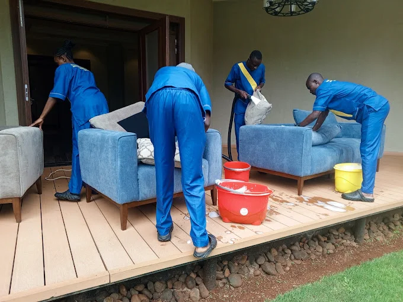

Why Professional Cleaning Matters in Kenya
Cleanliness is essential for health, productivity, and peace of mind — whether at home or in a commercial space. With busier lifestyles, dual-income families, and the rise of remote work, more Kenyans are turning to professional cleaning services in Kenya. What started as casual help has evolved into a structured industry offering everything from daily housekeeping to industrial-grade disinfection. Today, customers search online for professional cleaners near me, expecting verified quality and transparent pricing.
The Evolution of Cleaning in Kenya
In the past, cleaning was informal — neighbors helping neighbors or word-of-mouth referrals. Over the last decade, organized cleaning companies have emerged, equipped with modern machinery, eco-friendly chemicals, and online booking systems. The shift to digital listings and specialized service categories (from carpet cleaning to post-construction cleanup) has made it easier than ever to find trusted help.
Types of Cleaning Services Available
🏠 Residential Cleaning
- House cleaning (regular & one-off)
- Apartment cleaning specialists
- Bedsitter cleaning
- Post-construction cleaning
🏢 Commercial Cleaning
- Office & coworking spaces
- Shop & retail cleaning
- School & university premises
- Hospital & clinic sanitization
- Restaurant & cafe cleaning
Specialized Cleaning Services
Move-In & Move-Out Cleaning
Relocating? Our verified partners offer move-in cleaning, move-out cleaning, end of tenancy cleaning, and after renovation cleaning — ensuring your deposit is safe and your new home is spotless. Browse vetted cleaning companies that specialize in turnover cleans.
Airbnb & Hospitality Cleaning
Short-term rental hosts need fast, reliable turnover. Airbnb cleaning, guest house and hotel room sanitization, plus same-day turnover cleaning keep your property guest-ready and highly rated.
Laundry & Clothes Cleaning Services
- Laundry pickup & delivery – Nairobi, Mombasa, Kisumu
- Dry cleaning (suits, dresses, delicate fabrics)
- Ironing services – shirts, curtains, linens
- Bulk washing for hotels & events
🧼 Deep Cleaning Services
Full house deep cleaning, kitchen degreasing, bathroom sanitization, and professional disinfection services — ideal for allergy season or post-illness. Find certified deep cleaning experts on Fimbo.
Who Benefits from Professional Cleaners?
Why Hire Professional Cleaners?
- ⏱️ Saves time – Focus on what matters while experts clean.
- 🧰 Better equipment – Industrial vacuums, steamers, eco chemicals.
- ✨ Professional results – Spotless surfaces, deep sanitization.
- 🦠 Health & hygiene – Remove allergens, bacteria, mold.
- 📅 Reliable scheduling – Weekly, bi-weekly, or one-off.
How to Choose the Right Cleaning Partner
- Check online reviews and ratings (Google, Hudumika, Fimbo listings)
- Compare prices for similar scope of work
- Confirm the list of services offered (e.g., include carpet or windows)
- Verify location coverage (Nairobi CBD, Westlands, Kiambu, etc.)
- Ask about equipment and cleaning products (eco-friendly options)
Average Cleaning Service Prices in Kenya (KES)
| Service | Price Range (KES) |
|---|---|
| House cleaning (2-bedroom) | 2,500 - 5,500 |
| Sofa cleaning (3-seater) | 1,800 - 3,500 |
| Carpet cleaning (per room) | 1,500 - 3,000 |
| Office cleaning (small) | 3,000 - 7,000 |
| Deep cleaning (full house) | 6,000 - 12,000 |
| Mattress cleaning | 1,000 - 2,500 |
For Cleaning Businesses: How to Get More Clients
- List your services on Hudumika.co.ke and Fimbo's cleaning directory – free business profiles
- Add high-quality before/after photos of your work
- Use local keywords: “cleaning services in Nairobi West”, “house cleaning near me”
- Offer package deals (weekly + deep cleaning combo)
- Collect and respond to reviews – trust is everything
List Your Cleaning Service – Free & Fast
Get discovered by customers actively searching for trusted cleaners. Takes 3 minutes, zero cost.
List My Cleaning Business →✓ Free listing ✓ Verified badge ✓ WhatsApp leads
Frequently Asked Questions
How much is house cleaning in Kenya?
Typically KES 2,500–5,500 for a 2-3 bedroom house, depending on size and frequency (one-off vs weekly). Browse cleaning companies on Fimbo for transparent quotes.
Where can I find cleaners near me?
Use Hudumika.co.ke or Fimbo's cleaning category to filter verified cleaning professionals in your area (Nairobi, Mombasa, Kisumu, Nakuru, Eldoret).
What is deep cleaning?
Deep cleaning goes beyond surface tidying – includes baseboards, inside cabinets, behind appliances, grout scrubbing, and full disinfection. Expert deep cleaners available.
Do cleaning companies bring their own equipment?
Most professional companies supply everything: vacuum, mops, chemicals, and sometimes steam cleaners. Always confirm when booking.
How often should I schedule cleaning?
Weekly for busy families, bi-weekly for smaller households, monthly for deep cleans. Offices often require daily or 3x weekly.
Can I book same-day cleaning?
Yes, many verified pros offer same-day service for urgent needs like pre-guest or open house cleaning. Contact directly via WhatsApp.
Is sofa cleaning available at home?
Absolutely. Most sofa cleaning services are mobile – they come to your home with steam or dry cleaning equipment.
Ready to Book a Verified Cleaner?
Connect with trusted professionals for house cleaning, sofa care, office sanitization and more.
Get matched with pre-vetted cleaning professionals in Nairobi, Mombasa, Kisumu, Nakuru, Eldoret & nationwide. Also find options on Fimbo's cleaning hub.